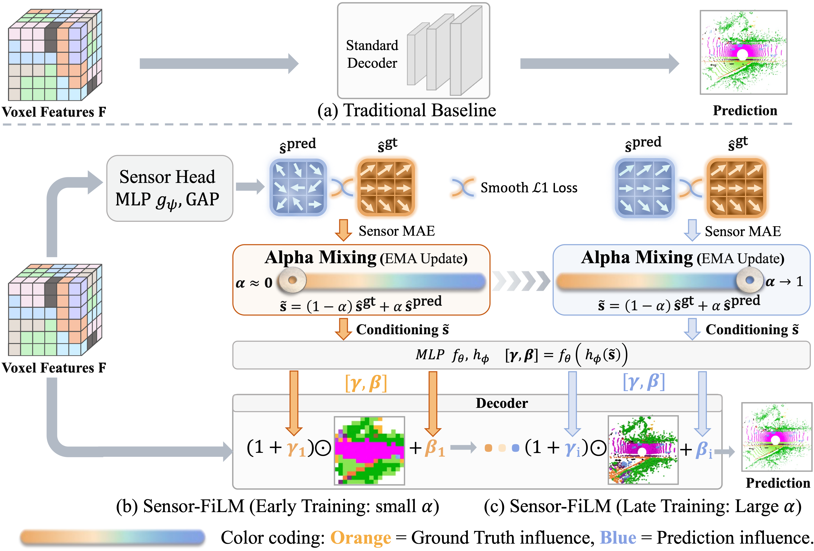
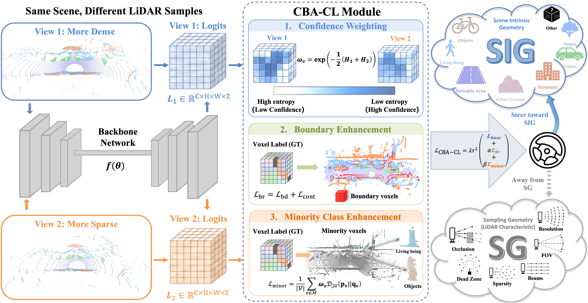
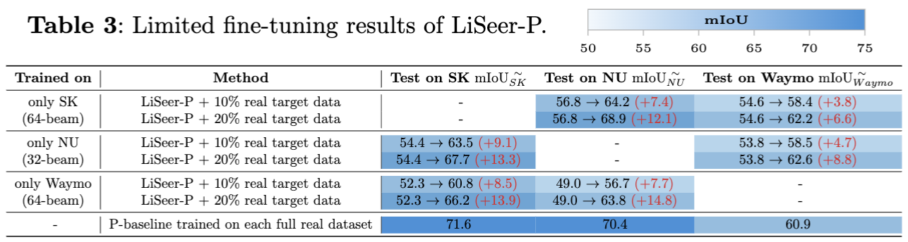
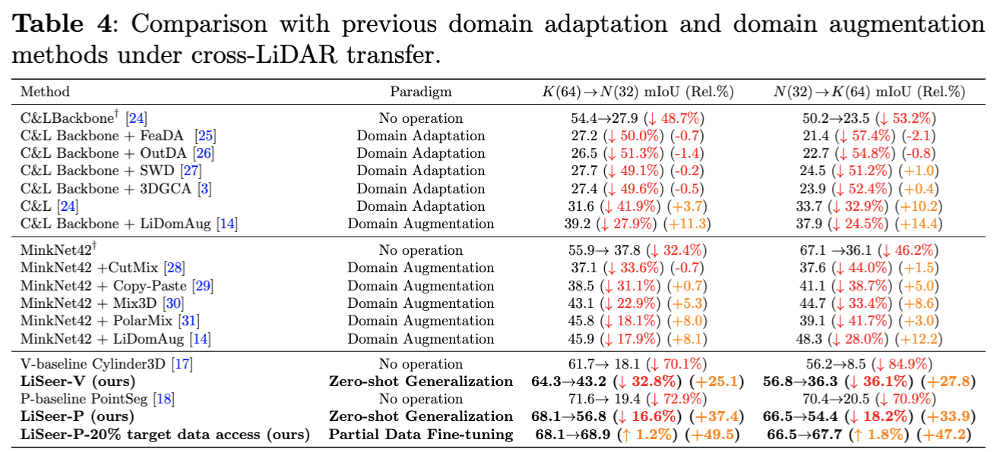
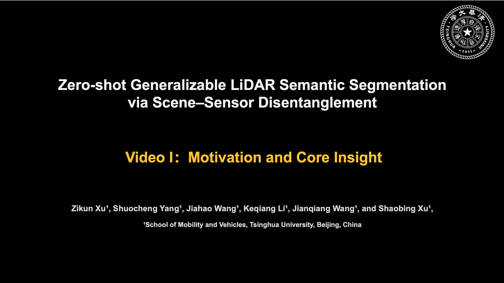
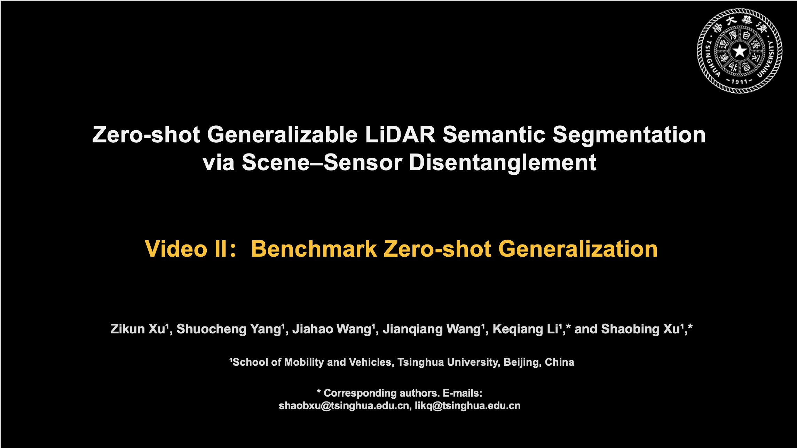
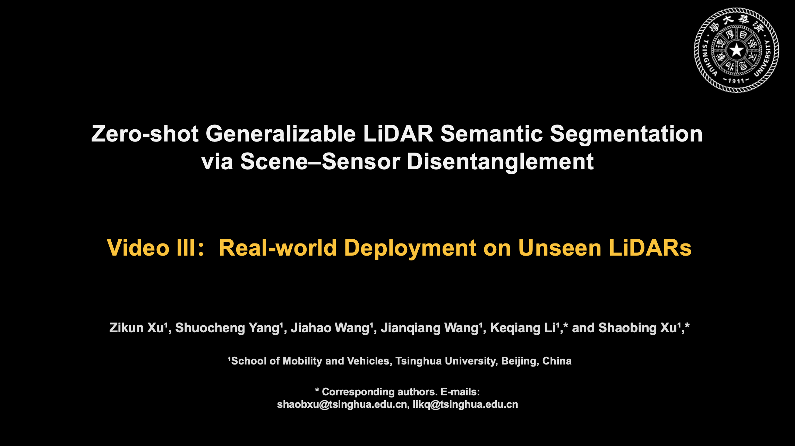

32-beam
TH-Courier
Compact courier robot, low mounting height, sparse scans.
Zero-shot LiDAR semantic segmentation that can generalize to multiple unseen LiDARs by disentangling scene–sensor geometry.
Main takeaway: LiSeer, a novel perception model trained on a single existing LiDAR yet can generalize to multiple unseen LiDARs with no additional effort — removing the long-standing dependence on per-sensor data collection and retraining, and greatly lowering the cost of migrating a perception system across different LiDARs.
Motivation: LiDAR is a key sensor for autonomous vehicles and mobile robots, yet today’s perception models suffer from a striking fragility: a model trained on one LiDAR fails almost completely on a different one, because it latches onto the idiosyncratic scanning pattern of the specific device rather than the underlying scene structure. Every new LiDAR then demands fresh data re-collection, re-annotation, and re-training — a costly cycle that has become a fundamental barrier to scalable, sensor-agnostic perception.
Perspective: We reframe what a LiDAR is: any LiDAR is a sparse sampler of the same underlying 3D world, so each scan decomposes into scene-intrinsic geometry (SIG) — what the scene is — and sensor-specific sampling geometry (SG) — how the sensor samples it. Cross-sensor generalization we propose in this work then reduces to learning SIG while not overfitting SG, a principle we summarize as “learning generalizability from randomness”.
Method: LiSeer realizes the aforementioned idea by a unified pipeline with two complementary parts: (i) a controllable data engine that generate point clouds of diverse LiDAR configurations randomly and virtually. It couples high-fidelity point-cloud densification with physics-based random sampling, turning one labeled dataset into a broad family of virtual cross-sensor observations without collecting any new data; and (ii) two plug-and-play modules that explicitly separate what is intrinsic to the scene from what is specific to the sensor, and the model is well trained to progressively steer toward the former.
Results: without any target-sensor data, LiSeer improves zero-shot cross-LiDAR segmentation mIoU by 25.1 to 43.6 points over two strong baselines; with 10–20% of target-sensor data it matches the models trained on 100% target-sensor data, implying about 80% cost reduction. The model trained on 64-beam LiDAR is deployed without any adaptation on three full-size real vehicles equipped with previously unseen 32-, 80-, and 128-beam LiDARs, it produces accurate and stable segmentation on every platform when running across campus, urban, and rural environments.
What a scene is should not depend on how a sensor samples it. LiSeer separates the two.

A unified pipeline that learns generalizability from randomness: broad exposure to sampling variation, plus guidance toward scene-intrinsic structure.
Densify each sparse scan, then resample it under randomized, physically grounded sensor configurations — beams, resolution, field of view, and mounting height — turning one dataset into a broad family of cross-sensor observations.

S-Film gives sensor variation (SG) an explicit pathway so the shared decoder can focus on SIG; CBA-CL pulls features toward consistent, class-boundary-aware semantics across different samplings of the same scene.


Evaluated on SemanticKITTI, Waymo, and nuScenes under a shared label space and identical backbones.



The trained model runs directly on three in-house vehicles with sensors it never saw in training, across campus, urban, and rural scenes.
Compact courier robot, low mounting height, sparse scans.
Autonomous vehicle, dense roof-mounted sensor.
Passenger vehicle, high-density unseen LiDAR.



Everything you need to reproduce LiSeer.
@article{xu2026liseer,
title = {Learning Generalizability from Randomness: Zero-Shot
LiDAR Semantic Segmentation via Scene--Sensor Disentanglement},
author = {Xu, Zikun and others},
journal = {Preprint},
year = {2026}
}